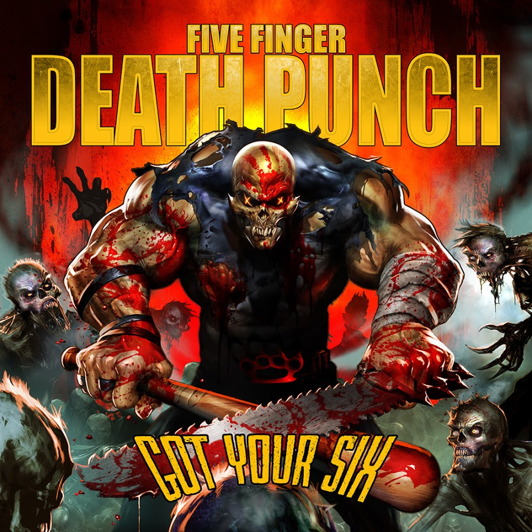
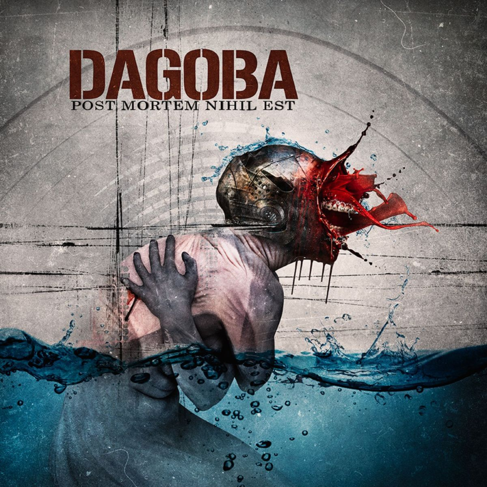

Hobby's
Mijn Hobby's lopen uit van alledaagse, normale dingen, tot dingen die niet vaak voorkomen. hieronder staan ze geordend van normaal naar minder normaal.
Gamen. Tegenwoordig een vaak voorkomende hobby. Ik heb thuis een PC staan met nog redelijke up-to-date
specs,
namelijk:
- Nvidia gtx 980 4GB
- Intel I7 4790K
- 2x 8GB DDR4
- 256GB SSD
- 1 TB HDD
Hierbij heb ik natuurlijk ook nog andere hardware zoals muizen, toetsenborden en een stuur:
- Logitech
g403
- Razer
Blackwidow
Expert (2014)
- Thrustmaster
TMX
- HyperX
Cloud II gun
metal
- Asus
VG248QE Zwart
De genres die ik voornamelijk speel zijn FPS (First Person Shooters) en racing games (voornamelijk Racing
sims). een paar favorieten zijn:
- Battlefield 4
- CSGO
- PUBG
- Dirt Rally
- Project Cars 2
- Assetto Corsa

Youtube kijken. Ik zit heel vaak lekker in mijn bed/op de bank youtube te kijken. Dit kan gaan over
games,
maar ook over bijvoorbeeld
unboxings, vuurwapens en messen (dit laatste kom ik zo nog op). Er gaat
eigenlijk
geen dag voorbij zonder dat ik lekker op mijn gemak Youtube
kijk om te relaxen.


Muziek luisteren.Een normale hobby die eigenlijk iedereen wel heeft. Ik luister elke dag, voor het
grootste
deel van de dag naar muziek.
Thuis, op de fiets, in de auto, op school, overal eigenlijk. Mijn favoriete
genre
is metal. Metal op zichzelf is een groot begrip. mijn favoriete sub-genres zijn:
- groove metal
- thrash metal
- metalcore
- nu metal
verder ben ik nog erg geïnteresseerd in messen en vuurwapens. Deze interesses stammen hoogst waarschijnlijk voort uit de shooters die ik
speel. ik heb ook tot kort (van 12/2015 t/m 08/2018) op een schietverenigin gezeten .Ook verzamel en draag ik dagelijks legale zakmessen. Dit doe
ik omdat ik messen erg interessant vind en ook omdat deze vaak nog handig kunnen zijn in situaties waar je een schaar of mes nodig zou hebben,
maar deze niet bij je hebt. Maak je geen zorgen, dit klinkt allemaal misschien gevaarlijk en raar, maar ik ga erg verantwoordelijk om met de spullen die ik heb.
- Battlefield 4
- CSGO
- PUBG
- Dirt Rally
- Project Cars 2
- Assetto Corsa
unboxings, vuurwapens en messen (dit laatste kom ik zo nog op). Er gaat eigenlijk geen dag voorbij zonder dat ik lekker op mijn gemak Youtube
kijk om te relaxen.
Thuis, op de fiets, in de auto, op school, overal eigenlijk. Mijn favoriete genre is metal. Metal op zichzelf is een groot begrip. mijn favoriete sub-genres zijn:
- groove metal
- thrash metal
- metalcore
- nu metal
speel. ik heb ook tot kort (van 12/2015 t/m 08/2018) op een schietverenigin gezeten .Ook verzamel en draag ik dagelijks legale zakmessen. Dit doe
ik omdat ik messen erg interessant vind en ook omdat deze vaak nog handig kunnen zijn in situaties waar je een schaar of mes nodig zou hebben,
maar deze niet bij je hebt. Maak je geen zorgen, dit klinkt allemaal misschien gevaarlijk en raar, maar ik ga erg verantwoordelijk om met de spullen die ik heb.